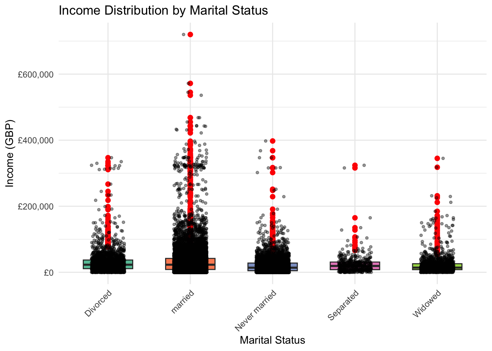

This analysis investigates data collected during a census across households in England, which was conducted in 2021. I performed exploratory data analysis of the dataset and derived insights and patterns on various socio-economic factors such as gender, income, age, marital status, ethnicity, level of education, and housing conditions.
2 1.2 Data Overview
The data set had 9 columns. These include (‘ID’, ‘Person_ID’, ‘Age’, ‘Mar_Stat’, ‘INC’, ‘Female’, ‘H8’, ‘Eth’, ‘Highest Ed’). It also had 27,410 entries with each entry representing an individual accounted for in the census. I was able to analyze this data set and create visualizations with the help of (Arnold 2024) and Wickham et al. (2019).
3 1.3 Data Cleaning and Transformation
I performed some data cleaning and transformations on the data set, in order to make the data set tidy, usable, and consistent. I renamed, transformed, and created some columns. I did these to make my data set tidy according to (Wickham 2014).
I performed some analysis to give more insights on the data set. I focused mainly on how average income earned is directly influenced by ethnicity, gender, level of education, and marital status. This helps me provide insights into possible income disparities across different groups in England in 2021.
5 2.2 Gender and Ethnicity (Demographic) against Income Earned
I investigated the data set to find out how income is distributed among entries above 18 (Working class age) and how average income earned fares in a chart against ethnicity and gender (demographic).
Code
dataset2 |>filter(Age >=18) |>group_by(Ethnicity, Gender) |>summarize(Average_Income =mean(Income, na.rm =TRUE), .groups ='drop') |>mutate(demographic =paste(Ethnicity, Gender, sep =" ")) |>ggplot(aes(y = Average_Income, x =reorder(demographic, -Average_Income), fill = Ethnicity)) +geom_col() +geom_text(aes(label =paste(round(Average_Income/1000, 1), 'k', sep ="")), vjust =1.5, size =4) +labs(title ="Average Income by Ethnicity and Gender",y ="Average Income in GBP",x ="Demographic" ) +scale_fill_brewer(palette ="Set3") +scale_y_continuous(breaks =seq(10000, 70000, by =10000)) +theme_minimal() +theme(axis.text.x =element_text(angle=45, hjust=1))
Figure 1: Average Income by Gender & Ethnicity
From the visualization above, I can conclude that the highest earning demographic are White Females, and they earn an average of GBP 43,800 annually, while the lowest earning demographic are Asian Males, who earn an average of GBP 12,700 yearly. I can also infer that Females generally earn more than Males, irrespective of the ethnicity.
6 2.3 Level of Education against Average Income earned
I went on to investigate the data further to see the relationship between level of education and average annual income earned by the individuals.
Code
#| label: fig-ed_inc#| fig-cap: "Income Distribution by level of Education"#| #| fig-alt: "Histograms showing Income distribution of each level of Education "dataset2 |>filter(!is.na(Highest_Education)) |>ggplot(aes(x = Income)) +geom_histogram(bins =30, fill ="blue", color ="pink") +scale_x_continuous(breaks =seq(0, 750000, by =100000)) +facet_wrap(~Highest_Education) +theme(axis.text.x =element_text(angle=45, hjust=1)) +labs(title ="Income Distribution by Level of Education",subtitle ="Histograms showing Income distribution for each level of Education",x ="Annual Income in GBP", y ="Frequency" )
The chart above shows there’s a relationship between average income earned and the level of education. It enforces that higher education level usually translates to higher income and a wider income range. Lower education levels (less than secondary school and secondary school) tend to be associated with lower income earned, with very few individuals earning high.
# A tibble: 10 × 3
# Groups: Ethnicity [5]
Ethnicity Gender Education
<chr> <chr> <chr>
1 Asian Female Less than Secondary School
2 Asian Male Less than Secondary School
3 Black Female Secondary School
4 Black Male Less than Secondary School
5 Hispanic Female Some HE
6 Hispanic Male Less than Secondary School
7 Other Female Secondary School
8 Other Male Some HE
9 White Female Some HE
10 White Male Secondary School
This table shows the most frequent educational level common to each of the demographics. It’s no surprise that we can see Hispanic Females and White Females having more individuals having an educational level of ‘Some Higher Education’, therefore correlating with my first chart of Females earning higher than Males.
7 2.4 Correlation between Marital Status and Average Income
I’m interested in investigating if marital status influences the average income for the various demographics in the data set. Do married individuals earn more on average than single individuals across the various ethnicities? Let’s find out.
Code
dataset2 |>filter(Age >=18) |># Filter for working-age individuals (18 and above) and remove missing valuesfilter(!is.na(Income), !is.na(Marital_Status)) |>ggplot(aes(x = Marital_Status, y = Income, fill = Marital_Status)) +# Generate a boxplot to show income distribution across marital statusesgeom_boxplot(outlier.color ="red", outlier.size =2, width =0.6) +# Optionally, add jitter points to show individual data pointsgeom_jitter(color ="black", size =1, width =0.2, alpha =0.4) +# Add labels and a titlelabs(title ="Income Distribution by Marital Status",x ="Marital Status",y ="Income (GBP)" ) +# Customize the color scheme and themescale_fill_brewer(palette ="Set2") +theme_minimal() +theme(axis.text.x =element_text(angle =45, hjust =1),legend.position ="none" ) +# Adjust y-axis scale to fit data rangescale_y_continuous(labels = scales::dollar_format(prefix ="£", big.mark =","))

This box plot shows how income is distributed among the various marital statuses in the data set. From my observations, Married individuals have a higher median income than other groups, with some earning as high as GBP 600,000, but the difference is not very pronounced. This is probably due to the presence of outliers in each of the groups. It is worth noting that the outliers in these other groups are not as much as the ones in the Married category, and in conclusion, married individuals tend to reach higher income levels than other groups.
Code
# Calculate the median income for each marital status groupmedian_income_by_marital_status <- dataset2 %>%filter(Age >=18, !is.na(Income), !is.na(Marital_Status)) %>%# Filter for working-age individuals and remove NA valuesgroup_by(Marital_Status) %>%# Group by marital statussummarize(Median_Income =median(Income, na.rm =TRUE)) # Calculate median income for each group# Display the resultprint(median_income_by_marital_status)
# A tibble: 5 × 2
Marital_Status Median_Income
<chr> <dbl>
1 Divorced 23000
2 Never married 14000
3 Separated 19200
4 Widowed 14140
5 married 23000
This table shows the median income of the various marital statuses in the data set.
8 3.1 Conclusion and Key Findings
I’ve been able to make some conclusions and key findings with the 2021 Census data set in England. The data collected were related to different socio-economic factors and conditions, and I can conclude the following insights after my analysis:
White females are the highest earning demographic in England, with White Males being the demographic that earns the least. Also, females in England generally earn more than their male counterparts.
Individuals with high education levels like Masters degrees and Bachelors degrees tend to earn more than individuals with lesser education levels like secondary school and less than secondary school.
Lastly, married individuals are more likely to have a higher average income, compared to other marital statuses or categories like divorced, separated, widowed, or never married.
9 3.2 Limitations
Presence of some extreme outliers which could easily distort general analysis.
Lack of more contextual variables which would’ve helped in further critical analysis of the census data.
The data collected are quite static, and won’t show how data like income earned and marital status changes over the course of an individual’s life.
Wickham, Hadley, Mara Averick, Jennifer Bryan, Winston Chang, Lucy D’Agostino McGowan, Romain François, Garrett Grolemund, et al. 2019. “Welcome to the Tidyverse” 4: 1686. https://doi.org/10.21105/joss.01686.